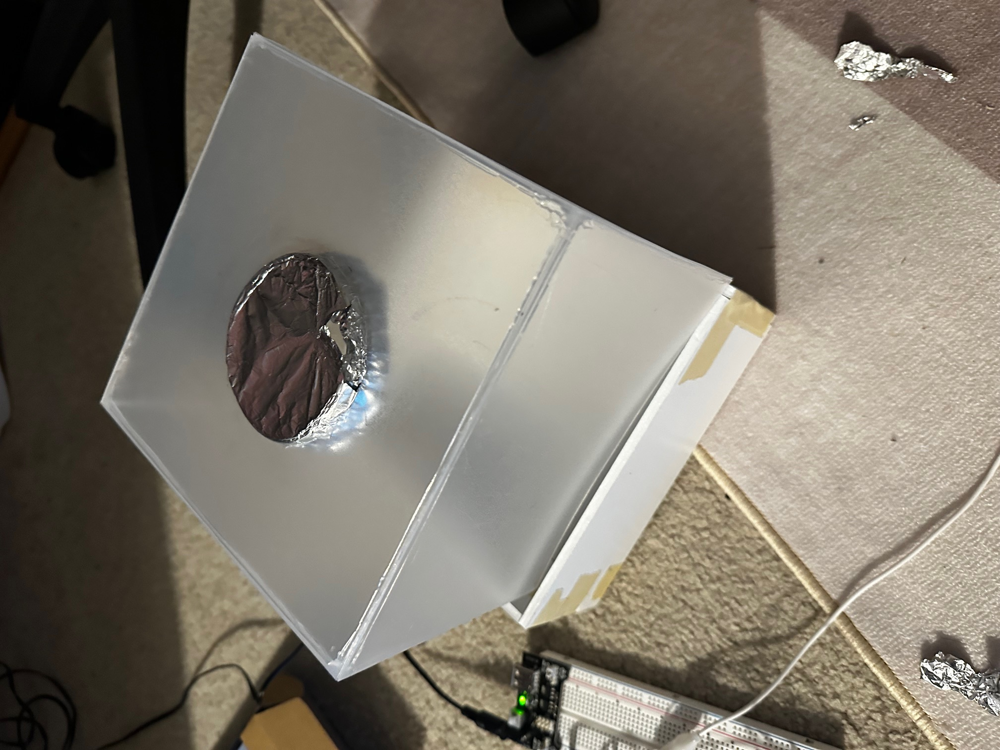

This project aims to create a lamp that responds to touch. Everytime a user makes contact with the metal button, the lamp will change color. The lamp also comes with a tactile button that can be used to turn the lamp on/off. While the project sounds like a regular lamp, it serves as a fun and inexpensive way to decorate and light up a room to my own liking.
This project was created using the arduino platform and the capacitive touch sensor. Additionally, soldering was used to attach RGB LED strip to wires that can connect to the arduino.
So how did we get to the finished product? Follow along with me and check out how I made this project!
Arduino Power Supply (9v), Power Module, Button, Alligator Clips + Wires / Resistors, Cardstock, Frosted Translucent Plastic Sheets, RGB Light Strip, & Metal Lid
In this schematic, I used a 9v power supply to power the RGB light strip. However, because the LED strip was 5V, I used a power module to convert the 9v to 5v. To control the LED strip, the LED was connected to pin 9 on the arduino. For the button, it was connected to pin 13 using a 10k ohm resistor. The capacitive touch sensor was connected to pin 5 and 6 on the arduino using a 1 megaohm resistor.
Technical Implementation: Capacitive touch sensor cycles through different colors when touched and released. Preventing rapid changes in color Button toggle turns the LED light on and off. LED RGB Strip currently displays 6 preset colors. Controlled by the Adafruit Neopixel library. The light strip was soltered to wires that could be connected to the arduino and breadboard. Powered by a 9v power supply that is modulated by a power module to convert it into 5V for the LED strip. Serial Monitoring used to calibrate touch sensitivity and debug responsiveness. Frosty Plastic panel hides the wiring and board from clear view while cardstock cardboard hides it from the base it rests on.
For my lamp, I designed a system where it would change color with the user touch and a button to turn on/off the lights.
The input device for the system is the capactive touch sensor which is connected through alligator clips, which are attatched to a metal lid (off-screen) The sensor is connected to pin 6 & 5 on the arduino, which usesa 1 megaohm resistor. The other input device is the button, which is connected to pin 13 on the arduino. The button uses a 10k ohm resistor. With the LED strip, it is powered by a 9v power supply, which is modulated by a power module to convert it into 5V. The LED strip is connected to pin 9 on the arduino.
Below is the code used for this assignment:
#include <tCapacitiveSensor.h>
#include <Adafruit_NeoPixel.h>
#define LED_PIN 9 // LED Strip
#define NUMPIXELS 30 // Number of LEDs
#define BUTTON_PIN 13 // Button pin
#define TOUCH_SEND 6 // Capacitive sensor send pin
#define TOUCH_RECEIVE 5 // Capacitive sensor receive pin
Adafruit_NeoPixel pixels(NUMPIXELS, LED_PIN, NEO_GRB + NEO_KHZ800);
CapacitiveSensor capSensor = CapacitiveSensor(TOUCH_SEND, TOUCH_RECEIVE);
bool ledState = true; // LED strip ON/OFF state
bool lastButtonState = HIGH; // Stores last button state for debounce
unsigned long lastDebounceTime = 0;
const unsigned long debounceDelay = 50; // Debounce delay in ms
int colorIndex = 0; // Index for cycling colors
long touchValue = 0; // Current capacitive sensor reading
long lastTouchValue = 0; // Previous reading for detecting release
const int touchThreshold = 500; // Sensitivity threshold for detecting touch
bool touchHeld = false; // Tracks if touch is being held
// Array of colors for cycling
uint32_t colors[] = {
pixels.Color(255, 0, 0), // Red
pixels.Color(10, 255, 35), // Green
pixels.Color(20, 107, 200), // Blue
pixels.Color(255, 255, 0), // Yellow
pixels.Color(176, 30, 197), // Magenta
pixels.Color(255, 255, 255) // White
};
int numColors = sizeof(colors) / sizeof(colors[0]); // Get number of colors
void setup() {
pinMode(BUTTON_PIN, INPUT_PULLUP); // Set button as input with pull-up resistor
pixels.begin(); // Initialize LED strip
pixels.show(); // Start with LEDs off
Serial.begin(9600); // Initialize Serial Monitor
}
void loop() {
// Button Press (ON/OFF toggle)
bool buttonState = digitalRead(BUTTON_PIN);
if (buttonState == LOW && lastButtonState == HIGH && (millis() - lastDebounceTime) > debounceDelay) {
lastDebounceTime = millis();
ledState = !ledState; // Toggle LED strip state
}
lastButtonState = buttonState;
//Read Capacitive Sensor
touchValue = capSensor.capacitiveSensor(75); // Read touch value
Serial.println(touchValue); // Print for debugging
// Detect "Touch Release" (Finger Lifted)
if (touchValue > touchThreshold) {
touchHeld = true; // Touch is being held
}
else if (touchHeld && touchValue < touchThreshold) {
touchHeld = false; // Detects when touch is released
colorIndex = (colorIndex + 1) % numColors; // Cycle to the next color
}
// Apply LED Behavior
if (ledState) {
setColor(colors[colorIndex]); // Set LED strip to current color
} else {
pixels.clear(); // Turn off LEDs
pixels.show();
}
}
// Function to apply color to LED strip
void setColor(uint32_t color) {
for (int i = 0; i < NUMPIXELS; i++) {
pixels.setPixelColor(i, color);
}
pixels.show();
}
After getting the code to work as intended, I started building the casing for the lamp. Using cardstock and frosted translucent plastic sheets, I created the casing for the lamp. The cardstock was cut to fit the breadboard and arduino while giving enough wiggle room for any adjustments. The cardstock was cut to "slot" into one another and hot glued together as extra support for the bottom casing. The frosted translucent plastic sheets were cut to fit the casing and hot glued together as well.
After ensuring the sheets were a snug fit with the casing, I outlined the metal lid to the top of the plastic sheet casing and cut it out to fit the lid. However, the outline was purposely cut smaller than the actual lid to ensure that the lid would stay on tightly.
*An aluminum wrapped lid was used temporarily to ensure proper implementation
However, the next challenge to ensure position the bredboard and arduino to where it was still snug, while making sure none of the wiring came loose. By hot glueing support braces
to ensure stability for the bread board, I came across an issue where the arduino was too short to ensure that any wires weren't coming loose. After glueing pieces of cardstock to act
as a platform, both the aruduino and breadboard were held in place.
Following the button, the cable entry for the power module and usb cable for the aruduino was cut out.
However, my biggest challenge was calibration, this was due to the sensitivity of capacitive touch sensor as sometimes it would jump and flash to different colors if touched in weird positions/angles. After some trial and error, the touch sensitivity was calibrated to ensure that would work as intended.
Lastly, mini support brackets were created to ensure that the plastic casing cover would not slide off now that the LED strip was attatched inside the case it would rub against the casings walls.